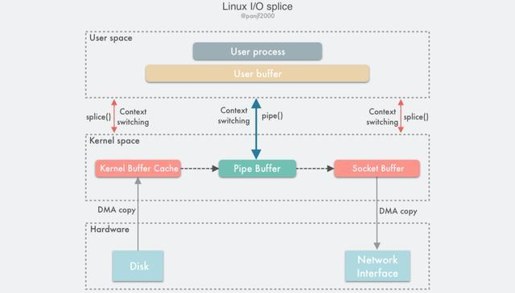
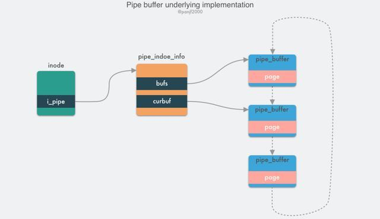
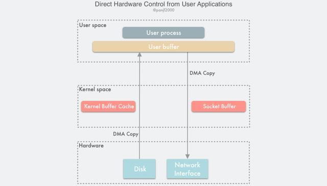

Linux Zero-copy 技术全面揭秘
本文介绍并解析 Linux 中的 Zero-copy 技术，并给出了 Linux 对 I/O 模块的优化和改进思路。
零拷贝 (Zero-copy)
Zero-copy 是什么？
Wikipedia 的解释如下：
“Zero-copy” describes computer operations in which the CPU does not perform the task of copying data from one memory area to another. This is frequently used to save CPU cycles and memory bandwidth when transmitting a file over a network.
零拷贝技术是指计算机执行操作时，CPU 不需要先将数据从某处内存复制到另一个特定区域。这种技术通常用于通过网络传输文件时节省 CPU 周期和内存带宽。
Zero-copy 能做什么？
- 减少甚至完全避免操作系统内核和用户应用程序地址空间之间进行数据拷贝操作，从而减少用户态 – 内核态上下文切换带来的系统开销。
- 减少甚至完全避免操作系统内核缓冲区之间进行数据拷贝操作。
- 帮助用户进程绕开操作系统内核空间直接访问硬件存储接口操作数据。
- 利用 DMA 而非 CPU 来完成硬件接口和内核缓冲区之间的数据拷贝，从而解放 CPU，使之能去执行其他的任务，提升系统性能。
Zero-copy 的实现方式有哪些？
从 zero-copy 这个概念被提出以来，相关的实现技术便犹如雨后春笋，层出不穷。但是截至目前为止，并没有任何一种 zero-copy 技术能满足所有的场景需求，还是计算机领域那句无比经典的名言：“There is no silver bullet”!
而在 Linux 平台上，同样也有很多的 zero-copy 技术，新旧各不同，可能存在于不同的内核版本里，很多技术可能有了很大的改进或者被更新的实现方式所替代，这些不同的实现技术按照其核心思想可以归纳成大致的以下三类：
- 减少甚至避免用户空间和内核空间之间的数据拷贝：在一些场景下，用户进程在数据传输过程中并不需要对数据进行访问和处理，那么数据在 Linux 的 Page Cache 和用户进程的缓冲区之间的传输就完全可以避免，让数据拷贝完全在内核里进行，甚至可以通过更巧妙的方式避免在内核里的数据拷贝。这一类实现一般是通过增加新的系统调用来完成的，比如 Linux 中的
mmap()，sendfile()以及splice()等。 - 绕过内核的直接 I/O：允许在用户态进程绕过内核直接和硬件进行数据传输，内核在传输过程中只负责一些管理和辅助的工作。这种方式其实和第一种有点类似，也是试图避免用户空间和内核空间之间的数据传输，只是第一种方式是把数据传输过程放在内核态完成，而这种方式则是直接绕过内核和硬件通信，效果类似但原理完全不同。
- 内核缓冲区和用户缓冲区之间的传输优化：这种方式侧重于在用户进程的缓冲区和操作系统的页缓存之间的 CPU 拷贝的优化。这种方法延续了以往那种传统的通信方式，但更灵活。
减少甚至避免用户空间和内核空间之间的数据拷贝
mmap()
1 |
|
一种简单的实现方案是在一次读写过程中用 Linux 的另一个系统调用 mmap() 替换原先的 read()，mmap() 也即是内存映射（memory map）：把用户进程空间的一段内存缓冲区（user buffer）映射到文件所在的内核缓冲区（kernel buffer）上。
利用 mmap() 替换 read()，配合 write() 调用的整个流程如下：
- 用户进程调用
mmap()，从用户态陷入内核态，将内核缓冲区映射到用户缓存区； - DMA 控制器将数据从硬盘拷贝到内核缓冲区；
mmap()返回，上下文从内核态切换回用户态；- 用户进程调用
write()，尝试把文件数据写到内核里的套接字缓冲区，再次陷入内核态； - CPU 将内核缓冲区中的数据拷贝到的套接字缓冲区；
- DMA 控制器将数据从套接字缓冲区拷贝到网卡完成数据传输；
write()返回，上下文从内核态切换回用户态。
通过这种方式，有两个优点：一是节省内存空间，因为用户进程上的这一段内存是虚拟的，并不真正占据物理内存，只是映射到文件所在的内核缓冲区上，因此可以节省一半的内存占用；二是省去了一次 CPU 拷贝，对比传统的 Linux I/O 读写，数据不需要再经过用户进程进行转发了，而是直接在内核里就完成了拷贝。所以使用 mmap() 之后的拷贝次数是 2 次 DMA 拷贝，1 次 CPU 拷贝，加起来一共 3 次拷贝操作，比传统的 I/O 方式节省了一次 CPU 拷贝以及一半的内存，不过因为 mmap() 也是一个系统调用，因此用户态和内核态的切换还是 4 次。
mmap() 因为既节省 CPU 拷贝次数又节省内存，所以比较适合大文件传输的场景。虽然 mmap() 完全是符合 POSIX 标准的，但是它也不是完美的，因为它并不总是能达到理想的数据传输性能。首先是因为数据数据传输过程中依然需要一次 CPU 拷贝，其次是内存映射技术是一个开销很大的虚拟存储操作：这种操作需要修改页表以及用内核缓冲区里的文件数据置换掉当前 TLB 里的缓存以维持虚拟内存映射的一致性。但是，因为内存映射通常针对的是相对较大的数据区域，所以对于相同大小的数据来说，内存映射所带来的开销远远低于 CPU 拷贝所带来的开销。此外，使用 mmap() 还可能会遇到一些需要值得关注的特殊情况，例如，在 mmap() --> write() 这两个系统调用的整个传输过程中，如果有其他的进程突然截断了这个文件，那么这时用户进程就会因为访问非法地址而被一个从总线传来的 SIGBUS 中断信号杀死并且产生一个 core dump。有两种解决办法：
-
设置一个信号处理器，专门用来处理 SIGBUS 信号，这个处理器直接返回，
write()就可以正常返回已写入的字节数而不会被 SIGBUS 中断，errno 错误码也会被设置成 success。然而这实际上是一个掩耳盗铃的解决方案，因为 SIGBUS 信号的带来的信息是系统发生了一些很严重的错误，而我们却选择忽略掉它，一般不建议采用这种方式。 -
通过内核的文件租借锁（这是 Linux 的叫法，Windows 上称之为机会锁）来解决这个问题，这种方法相对来说更好一些。我们可以通过内核对文件描述符上读 / 写的租借锁，当另外一个进程尝试对当前用户进程正在进行传输的文件进行截断的时候，内核会发送给用户一个实时信号：RT_SIGNAL_LEASE 信号，这个信号会告诉用户内核正在破坏你加在那个文件上的读 / 写租借锁，这时
write()系统调用会被中断，并且当前用户进程会被 SIGBUS 信号杀死，返回值则是中断前写的字节数，errno 同样会被设置为 success。文件租借锁需要在对文件进行内存映射之前设置，最后在用户进程结束之前释放掉。
sendfile()
在 Linux 内核 2.1 版本中，引入了一个新的系统调用 sendfile()：
1 |
|
从功能上来看，这个系统调用将 mmap() + write() 这两个系统调用合二为一，实现了一样效果的同时还简化了用户接口，其他的一些 Unix-like 的系统像 BSD、Solaris 和 AIX 等也有类似的实现，甚至 Windows 上也有一个功能类似的 API 函数 TransmitFile。
out_fd 和 in_fd 分别代表了写入和读出的文件描述符，in_fd 必须是一个指向文件的文件描述符，且要能支持类 mmap() 内存映射，不能是 Socket 类型，而 out_fd 在 Linux 内核 2.6.33 版本之前只能是一个指向 Socket 的文件描述符，从 2.6.33 之后则可以是任意类型的文件描述符。off_t 是一个代表了 in_fd 偏移量的指针，指示 sendfile() 该从 in_fd 的哪个位置开始读取，函数返回后，这个指针会被更新成 sendfile() 最后读取的字节位置处，表明此次调用共读取了多少文件数据，最后的 count 参数则是此次调用需要传输的字节总数。
使用 sendfile() 完成一次数据读写的流程如下：
- 用户进程调用
sendfile()从用户态陷入内核态； - DMA 控制器将数据从硬盘拷贝到内核缓冲区；
- CPU 将内核缓冲区中的数据拷贝到套接字缓冲区；
- DMA 控制器将数据从套接字缓冲区拷贝到网卡完成数据传输；
sendfile()返回，上下文从内核态切换回用户态。
基于 sendfile()，整个数据传输过程中共发生 2 次 DMA 拷贝和 1 次 CPU 拷贝，这个和 mmap() + write() 相同，但是因为 sendfile() 只是一次系统调用，因此比前者少了一次用户态和内核态的上下文切换开销。读到这里，聪明的读者应该会开始提问了：“sendfile() 会不会遇到和 mmap() + write() 相似的文件截断问题呢？”，很不幸，答案是肯定的。sendfile() 一样会有文件截断的问题，但欣慰的是，sendfile() 不仅比 mmap() + write() 在接口使用上更加简洁，而且处理文件截断时也更加优雅：如果 sendfile() 过程中遭遇文件截断，则 sendfile() 系统调用会被中断杀死之前返回给用户进程其中断前所传输的字节数，errno 会被设置为 success，无需用户提前设置信号处理器，当然你要设置一个进行个性化处理也可以，也不需要像之前那样提前给文件描述符设置一个租借锁，因为最终结果还是一样的。
sendfile() 相较于 mmap() 的另一个优势在于数据在传输过程中始终没有越过用户态和内核态的边界，因此极大地减少了存储管理的开销。即便如此，sendfile() 依然是一个适用性很窄的技术，最适合的场景基本也就是一个静态文件服务器了。而且根据 Linus 在 2001 年和其他内核维护者的邮件列表内容，其实当初之所以决定在 Linux 上实现 sendfile() 仅仅是因为在其他操作系统平台上已经率先实现了，而且有大名鼎鼎的 Apache Web 服务器已经在使用了，为了兼容 Apache Web 服务器才决定在 Linux 上也实现这个技术，而且 sendfile() 实现上的简洁性也和 Linux 内核的其他部分集成得很好，所以 Linus 也就同意了这个提案。
然而 sendfile() 本身是有很大问题的，从不同的角度来看的话主要是：
- 首先一个是这个接口并没有进行标准化，导致
sendfile()在 Linux 上的接口实现和其他类 Unix 系统的实现并不相同； - 其次由于网络传输的异步性，很难在接收端实现和
sendfile()对接的技术，因此接收端一直没有实现对应的这种技术； - 最后从性能方面考量，因为
sendfile()在把磁盘文件从内核缓冲区（page cache）传输到到套接字缓冲区的过程中依然需要 CPU 参与，这就很难避免 CPU 的高速缓存被传输的数据所污染。
此外，需要说明下，sendfile() 的最初设计并不是用来处理大文件的，因此如果需要处理很大的文件的话，可以使用另一个系统调用 sendfile64()，它支持对更大的文件内容进行寻址和偏移。
sendfile() with DMA Scatter/Gather Copy
上一小节介绍的 sendfile() 技术已经把一次数据读写过程中的 CPU 拷贝的降低至只有 1 次了，但是人永远是贪心和不知足的，现在如果想要把这仅有的一次 CPU 拷贝也去除掉，有没有办法呢？
当然有！通过引入一个新硬件上的支持，我们可以把这个仅剩的一次 CPU 拷贝也给抹掉：Linux 在内核 2.4 版本里引入了 DMA 的 scatter/gather – 分散 / 收集功能，并修改了 sendfile() 的代码使之和 DMA 适配。scatter 使得 DMA 拷贝可以不再需要把数据存储在一片连续的内存空间上，而是允许离散存储，gather 则能够让 DMA 控制器根据少量的元信息：一个包含了内存地址和数据大小的缓冲区描述符，收集存储在各处的数据，最终还原成一个完整的网络包，直接拷贝到网卡而非套接字缓冲区，避免了最后一次的 CPU 拷贝：
sendfile() + DMA gather 的数据传输过程如下：
- 用户进程调用
sendfile()，从用户态陷入内核态； - DMA 控制器使用 scatter 功能把数据从硬盘拷贝到内核缓冲区进行离散存储；
- CPU 把包含内存地址和数据长度的缓冲区描述符拷贝到套接字缓冲区，DMA 控制器能够根据这些信息生成网络包数据分组的报头和报尾；
- DMA 控制器根据缓冲区描述符里的内存地址和数据大小，使用 scatter-gather 功能开始从内核缓冲区收集离散的数据并组包，最后直接把网络包数据拷贝到网卡完成数据传输；
sendfile()返回，上下文从内核态切换回用户态。
基于这种方案，我们就可以把这仅剩的唯一一次 CPU 拷贝也给去除了（严格来说还是会有一次，但是因为这次 CPU 拷贝的只是那些微乎其微的元信息，开销几乎可以忽略不计），理论上，数据传输过程就再也没有 CPU 的参与了，也因此 CPU 的高速缓存再不会被污染了，也不再需要 CPU 来计算数据校验和了，CPU 可以去执行其他的业务计算任务，同时和 DMA 的 I/O 任务并行，此举能极大地提升系统性能。
splice()
sendfile() + DMA Scatter/Gather 的零拷贝方案虽然高效，但是也有两个缺点：
- 这种方案需要引入新的硬件支持；
- 虽然
sendfile()的输出文件描述符在 Linux kernel 2.6.33 版本之后已经可以支持任意类型的文件描述符，但是输入文件描述符依然只能指向文件。
这两个缺点限制了 sendfile() + DMA Scatter/Gather 方案的适用场景。为此，Linux 在 2.6.17 版本引入了一个新的系统调用 splice()，它在功能上和 sendfile() 非常相似，但是能够实现在任意类型的两个文件描述符时之间传输数据；而在底层实现上，splice() 又比 sendfile() 少了一次 CPU 拷贝，也就是等同于 sendfile() + DMA Scatter/Gather，完全去除了数据传输过程中的 CPU 拷贝。
splice() 系统调用函数定义如下：
1 |
|
fd_in 和 fd_out 也是分别代表了输入端和输出端的文件描述符，这两个文件描述符必须有一个是指向管道设备的，这也是一个不太友好的限制，虽然 Linux 内核开发的官方从这个系统调用推出之时就承诺未来可能会重构去掉这个限制，然而他们许下这个承诺之后就如同石沉大海，如今 14 年过去了，依旧杳无音讯…
off_in 和 off_out 则分别是 fd_in 和 fd_out 的偏移量指针，指示内核从哪里读取和写入数据，len 则指示了此次调用希望传输的字节数，最后的 flags 是系统调用的标记选项位掩码，用来设置系统调用的行为属性的，由以下 0 个或者多个值通过『或』操作组合而成：
SPLICE_F_MOVE：指示splice()尝试仅仅是移动内存页面而不是复制，设置了这个值不代表就一定不会复制内存页面，复制还是移动取决于内核能否从管道中移动内存页面，或者管道中的内存页面是否是完整的；这个标记的初始实现有很多 bug，所以从 Linux 2.6.21 版本开始就已经无效了，但还是保留了下来，因为在未来的版本里可能会重新被实现。SPLICE_F_NONBLOCK：指示splice()不要阻塞 I/O，也就是使得splice()调用成为一个非阻塞调用，可以用来实现异步数据传输，不过需要注意的是，数据传输的两个文件描述符也最好是预先通过 O_NONBLOCK 标记成非阻塞 I/O，不然splice()调用还是有可能被阻塞。SPLICE_F_MORE：通知内核下一个splice()系统调用将会有更多的数据传输过来，这个标记对于输出端是 socket 的场景非常有用。
splice() 是基于 Linux 的管道缓冲区 (pipe buffer) 机制实现的，所以 splice() 的两个入参文件描述符才要求必须有一个是管道设备，一个典型的 splice() 用法是：
1 | int pfd[2]; |
数据传输过程图：
使用 splice() 完成一次磁盘文件到网卡的读写过程如下：
- 用户进程调用
pipe()，从用户态陷入内核态，创建匿名单向管道，pipe()返回，上下文从内核态切换回用户态； - 用户进程调用
splice()，从用户态陷入内核态； - DMA 控制器将数据从硬盘拷贝到内核缓冲区，从管道的写入端 " 拷贝 " 进管道，
splice()返回，上下文从内核态回到用户态； - 用户进程再次调用
splice()，从用户态陷入内核态； - 内核把数据从管道的读取端 " 拷贝 " 到套接字缓冲区，DMA 控制器将数据从套接字缓冲区拷贝到网卡；
splice()返回，上下文从内核态切换回用户态。
相信看完上面的读写流程之后，读者肯定会非常困惑：说好的 splice() 是 sendfile() 的改进版呢？sendfile() 好歹只需要一次系统调用，splice() 居然需要三次，这也就罢了，居然中间还搞出来一个管道，而且还要在内核空间拷贝两次，这算个毛的改进啊？
我最开始了解 splice() 的时候，也是这个反应，但是深入学习它之后，才渐渐知晓个中奥妙，且听我细细道来：
先来了解一下 pipe buffer 管道，管道是 Linux 上用来供进程之间通信的信道，管道有两个端：写入端和读出端，从进程的视角来看，管道表现为一个 FIFO 字节流环形队列：
管道本质上是一个内存中的文件，也就是本质上还是基于 Linux 的 VFS，用户进程可以通过 pipe() 系统调用创建一个匿名管道，创建完成之后会有两个 VFS 的 file 结构体的 inode 分别指向其写入端和读出端，并返回对应的两个文件描述符，用户进程通过这两个文件描述符读写管道；管道的容量单位是一个虚拟内存的页，也就是 4KB，总大小一般是 16 个页，基于其环形结构，管道的页可以循环使用，提高内存利用率。Linux 中以 pipe_buffer 结构体封装管道页，file 结构体里的 inode 字段里会保存一个 pipe_inode_info 结构体指代管道，其中会保存很多读写管道时所需的元信息，环形队列的头部指针页，读写时的同步机制如互斥锁、等待队列等：
1 | struct pipe_buffer { |
pipe_buffer 中保存了数据在内存中的页、偏移量和长度，以这三个值来定位数据，注意这里的页不是虚拟内存的页，而用的是物理内存的页框，因为管道时跨进程的信道，因此不能使用虚拟内存来表示，只能使用物理内存的页框定位数据；管道的正常读写操作是通过 pipe_write() 和 pipe_read() 来完成的，通过把数据读取 / 写入环形队列的 pipe_buffer 来完成数据传输。
splice() 是基于 pipe buffer 实现的，但是它在通过管道传输数据的时候却是零拷贝，因为它在写入读出时并没有使用 pipe_write() 和 pipe_read() 真正地在管道缓冲区写入读出数据，而是通过把数据在内存缓冲区中的物理内存页框指针、偏移量和长度赋值给前文提及的 pipe_buffer 中对应的三个字段来完成数据的 " 拷贝 "，也就是其实只拷贝了数据的内存地址等元信息。
splice() 在 Linux 内核源码中的内部实现是 do_splice() 函数，而写入读出管道则分别是通过 do_splice_to() 和 do_splice_from()，这里我们重点来解析下写入管道的源码，也就是 do_splice_to()，我现在手头的 Linux 内核版本是 v4.8.17，我们就基于这个版本来分析，至于读出的源码函数 do_splice_from()，原理是相通的，大家举一反三即可。
splice() 写入数据到管道的调用链式：do_splice() --> do_splice_to() --> splice_read()
1 | static long do_splice( |
进入 do_splice_to() 之后，再调用 splice_read()：
1 | static long do_splice_to( |
in->f_op->splice_read 这个函数指针根据文件描述符的类型不同有不同的实现，比如这里的 in 是一个文件，因此是 generic_file_splice_read()，如果是 socket 的话，则是 sock_splice_read()，其他的类型也会有对应的实现，总之我们这里将使用的是 generic_file_splice_read() 函数，这个函数会继续调用内部函数 __generic_file_splice_read() 完成以下工作：
- 在 page cache 页缓存里进行搜寻，看看我们要读取这个文件内容是否已经在缓存里了，如果是则直接用，否则如果不存在或者只有部分数据在缓存中，则分配一些新的内存页并进行读入数据操作，同时会增加页框的引用计数；
- 基于这些内存页，初始化
splice_pipe_desc结构，这个结构保存会保存文件数据的地址元信息，包含有物理内存页框地址，偏移、数据长度，也就是pipe_buffer所需的三个定位数据的值； - 最后，调用
splice_to_pipe()，splice_pipe_desc结构体实例是函数入参。
1 | ssize_t splice_to_pipe( |
这里可以清楚地看到 splice() 所谓的写入数据到管道其实并没有真正地拷贝数据，而是玩了个 tricky 的操作：只进行内存地址指针的拷贝而不真正去拷贝数据。所以，数据 splice() 在内核中并没有进行真正的数据拷贝，因此 splice() 系统调用也是零拷贝。
还有一点需要注意，前面说过管道的容量是 16 个内存页，也就是 16x4KB = 64 KB，也就是说一次往管道里写数据的时候最好不要超过 64 KB，否则的话会 splice() 会阻塞住，除非在创建管道的时候使用的是 pipe2() 并通过传入 O_NONBLOCK 属性将管道设置为非阻塞。
即使 splice() 通过内存地址指针避免了真正的拷贝开销，但是算起来它还要使用额外的管道来完成数据传输，也就是比 sendfile() 多了两次系统调用，这不是又增加了上下文切换的开销吗？为什么不直接在内核创建管道并调用那两次 splice()，然后只暴露给用户一次系统调用呢？实际上因为 splice() 利用管道而非硬件来完成零拷贝的实现比 sendfile() + DMA Scatter/Gather 的门槛更低，因此后来的 sendfile() 的底层实现就已经替换成 splice() 了。
至于说 splice() 本身的 API 为什么还是这种使用模式，那是因为 Linux 内核开发团队一直想把基于管道的这个限制去掉，但不知道因为什么一直搁置，所以这个 API 也就一直没变化，只能等内核团队哪天想起来了这一茬，然后重构一下使之不再依赖管道，在那之前，使用 splice() 依然还是需要额外创建管道来作为中间缓冲。
如果你的业务场景很适合使用 splice()，但又是性能敏感的，不想频繁地创建销毁 pipe buffer 管道缓冲区，那么可以参考一下 HAProxy 使用 splice() 时采用的优化方案：预先分配一个 pipe buffer pool 缓存管道，每次调用 splice() 的时候去缓存池里取一个管道，用完就放回去，循环利用，提升性能。
send() with MSG_ZEROCOPY
Linux 内核在 2017 年的 v4.14 版本接受了来自 Google 工程师 Willem de Bruijn 在 TCP 网络报文的通用发送接口 send() 中实现的 zero-copy 功能 (MSG_ZEROCOPY) 的 patch，通过这个新功能，用户进程就能够把用户缓冲区的数据通过零拷贝的方式经过内核空间发送到网络套接字中去。
这个新技术和前文介绍的几种零拷贝方式相比更加先进，因为前面几种零拷贝技术都是要求用户进程不能处理加工数据而是直接转发到目标文件描述符中去的。Willem de Bruijn 在他的论文里给出的压测数据是：采用 netperf 大包发送测试，性能提升 39%，而线上环境的数据发送性能则提升了 5%~8%，官方文档陈述说这个特性通常只在发送 10KB 左右大包的场景下才会有显著的性能提升。一开始这个特性只支持 TCP，到内核 v5.0 版本之后才支持 UDP。
这个功能的使用模式如下：
1 | if (setsockopt(socket_fd, SOL_SOCKET, SO_ZEROCOPY, &one, sizeof(one))) |
首先第一步，先给要发送数据的 socket 设置一个 SOCK_ZEROCOPY option，然后在调用 send() 发送数据时再设置一个 MSG_ZEROCOPY option，其实理论上来说只需要调用 setsockopt() 或者 send() 时传递这个 zero-copy 的 option 即可，两者选其一，但是这里却要设置同一个 option 两次，官方的说法是为了兼容 send() API 以前的设计上的一个错误：send() 以前的实现会忽略掉未知的 option，为了兼容那些可能已经不小心设置了 MSG_ZEROCOPY option 的程序，故而设计成了两步设置。不过我猜还有一种可能：就是给使用者提供更灵活的使用模式，因为这个新功能只在大包场景下才可能会有显著的性能提升，但是现实场景是很复杂的，不仅仅是全部大包或者全部小包的场景，有可能是大包小包混合的场景，因此使用者可以先调用 setsockopt() 设置 SOCK_ZEROCOPY option，然后再根据实际业务场景中的网络包尺寸选择是否要在调用 send() 时使用 MSG_ZEROCOPY 进行 zero-copy 传输。
因为 send() 可能是异步发送数据，因此使用 MSG_ZEROCOPY 有一个需要特别注意的点是：调用 send() 之后不能立刻重用或释放 buffer，因为 buffer 中的数据不一定已经被内核读走了，所以还需要从 socket 关联的错误队列里读取一下通知消息，看看 buffer 中的数据是否已经被内核读走了：
1 | pfd.fd = fd; |
这个技术是基于 redhat 红帽在 2010 年给 Linux 内核提交的 virtio-net zero-copy 技术之上实现的，至于底层原理，简单来说就是通过 send() 把数据在用户缓冲区中的分段指针发送到 socket 中去，利用 page pinning 页锁定机制锁住用户缓冲区的内存页，然后利用 DMA 直接在用户缓冲区通过内存地址指针进行数据读取，实现零拷贝；具体的细节可以通过阅读 Willem de Bruijn 的论文 (PDF) 深入了解。
目前来说，这种技术的主要缺陷有：
- 只适用于大文件 (10KB 左右) 的场景，小文件场景因为 page pinning 页锁定和等待缓冲区释放的通知消息这些机制，甚至可能比直接 CPU 拷贝更耗时；
- 因为可能异步发送数据，需要额外调用
poll()和recvmsg()系统调用等待 buffer 被释放的通知消息，增加代码复杂度，以及会导致多次用户态和内核态的上下文切换； - MSG_ZEROCOPY 目前只支持发送端，接收端暂不支持。
绕过内核的直接 I/O
可以看出，前面种种的 zero-copy 的方法，都是在想方设法地优化减少或者去掉用户态和内核态之间以及内核态和内核态之间的数据拷贝，为了实现避免这些拷贝可谓是八仙过海，各显神通，采用了各种各样的手段，那么如果我们换个思路：其实这么费劲地去消除这些拷贝不就是因为有内核在掺和吗？如果我们绕过内核直接进行 I/O 不就没有这些烦人的拷贝问题了吗？这就是 绕过内核直接 I/O技术：
这种方案有两种实现方式：
- 用户直接访问硬件
- 内核控制访问硬件
用户直接访问硬件
这种技术赋予用户进程直接访问硬件设备的权限，这让用户进程能有直接读写硬件设备，在数据传输过程中只需要内核做一些虚拟内存配置相关的工作。这种无需数据拷贝和内核干预的直接 I/O，理论上是最高效的数据传输技术，但是正如前面所说的那样，并不存在能解决一切问题的银弹，这种直接 I/O 技术虽然有可能非常高效，但是它的适用性也非常窄，目前只适用于诸如 MPI 高性能通信、丛集计算系统中的远程共享内存等有限的场景。
这种技术实际上破坏了现代计算机操作系统最重要的概念之一 —— 硬件抽象，我们之前提过，抽象是计算机领域最最核心的设计思路，正式由于有了抽象和分层，各个层级才能不必去关心很多底层细节从而专注于真正的工作，才使得系统的运作更加高效和快速。此外，网卡通常使用功能较弱的 CPU，例如只包含简单指令集的 MIPS 架构处理器（没有不必要的功能，如浮点数计算等），也没有太多的内存来容纳复杂的软件。因此，通常只有那些基于以太网之上的专用协议会使用这种技术，这些专用协议的设计要比远比 TCP/IP 简单得多，而且多用于局域网环境中，在这种环境中，数据包丢失和损坏很少发生，因此没有必要进行复杂的数据包确认和流量控制机制。而且这种技术还需要定制的网卡，所以它是高度依赖硬件的。
与传统的通信设计相比，直接硬件访问技术给程序设计带来了各种限制：由于设备之间的数据传输是通过 DMA 完成的，因此用户空间的数据缓冲区内存页必须进行 page pinning（页锁定），这是为了防止其物理页框地址被交换到磁盘或者被移动到新的地址而导致 DMA 去拷贝数据的时候在指定的地址找不到内存页从而引发缺页错误，而页锁定的开销并不比 CPU 拷贝小，所以为了避免频繁的页锁定系统调用，应用程序必须分配和注册一个持久的内存池，用于数据缓冲。
用户直接访问硬件的技术可以得到极高的 I/O 性能，但是其应用领域和适用场景也极其的有限，如集群或网络存储系统中的节点通信。它需要定制的硬件和专门设计的应用程序，但相应地对操作系统内核的改动比较小，可以很容易地以内核模块或设备驱动程序的形式实现出来。直接访问硬件还可能会带来严重的安全问题，因为用户进程拥有直接访问硬件的极高权限，所以如果你的程序设计没有做好的话，可能会消耗本来就有限的硬件资源或者进行非法地址访问，可能也会因此间接地影响其他正在使用同一设备的应用程序，而因为绕开了内核，所以也无法让内核替你去控制和管理。
内核控制访问硬件
相较于用户直接访问硬件技术，通过内核控制的直接访问硬件技术更加的安全，它比前者在数据传输过程中会多干预一点，但也仅仅是作为一个代理人这样的角色，不会参与到实际的数据传输过程，内核会控制 DMA 引擎去替用户进程做缓冲区的数据传输工作。同样的，这种方式也是高度依赖硬件的，比如一些集成了专有网络栈协议的网卡。这种技术的一个优势就是用户集成去 I/O 时的接口不会改变，就和普通的 read()/write() 系统调用那样使用即可，所有的脏活累活都在内核里完成，用户接口友好度很高，不过需要注意的是，使用这种技术的过程中如果发生了什么不可预知的意外从而导致无法使用这种技术进行数据传输的话，则内核会自动切换为最传统 I/O 模式，也就是性能最差的那种模式。
这种技术也有着和用户直接访问硬件技术一样的问题：DMA 传输数据的过程中，用户进程的缓冲区内存页必须进行 page pinning 页锁定，数据传输完成后才能解锁。CPU 高速缓存内保存的多个内存地址也会被冲刷掉以保证 DMA 传输前后的数据一致性。这些机制有可能会导致数据传输的性能变得更差，因为 read()/write() 系统调用的语义并不能提前通知 CPU 用户缓冲区要参与 DMA 数据传输传输，因此也就无法像内核缓冲区那样可依提前加载进高速缓存，提高性能。
由于用户缓冲区的内存页可能分布在物理内存中的任意位置，因此一些实现不好的 DMA 控制器引擎可能会有寻址限制从而导致无法访问这些内存区域。一些技术比如 AMD64 架构中的 IOMMU，允许通过将 DMA 地址重新映射到内存中的物理地址来解决这些限制，但反过来又可能会导致可移植性问题，因为其他的处理器架构，甚至是 Intel 64 位 x86 架构的变种 EM64T 都不具备这样的特性单元。此外，还可能存在其他限制，比如 DMA 传输的数据对齐问题，又会导致无法访问用户进程指定的任意缓冲区内存地址。
内核缓冲区和用户缓冲区之间的传输优化
到目前为止，我们讨论的 zero-copy 技术都是基于减少甚至是避免用户空间和内核空间之间的 CPU 数据拷贝的，虽然有一些技术非常高效，但是大多都有适用性很窄的问题，比如 sendfile()、splice() 这些，效率很高，但是都只适用于那些用户进程不需要直接处理数据的场景，比如静态文件服务器或者是直接转发数据的代理服务器。
现在我们已经知道，硬件设备之间的数据可以通过 DMA 进行传输，然而却并没有这样的传输机制可以应用于用户缓冲区和内核缓冲区之间的数据传输。不过另一方面，广泛应用在现代的 CPU 架构和操作系统上的虚拟内存机制表明，通过在不同的虚拟地址上重新映射页面可以实现在用户进程和内核之间虚拟复制和共享内存，尽管一次传输的内存颗粒度相对较大：4KB 或 8KB。
因此如果要在实现在用户进程内处理数据（这种场景比直接转发数据更加常见）之后再发送出去的话，用户空间和内核空间的数据传输就是不可避免的，既然避无可避，那就只能选择优化了，因此本章节我们要介绍两种优化用户空间和内核空间数据传输的技术：
- 动态重映射与写时拷贝 (Copy-on-Write)
- 缓冲区共享 (Buffer Sharing)
动态重映射与写时拷贝 (Copy-on-Write)
前面我们介绍过利用内存映射技术来减少数据在用户空间和内核空间之间的复制，通常简单模式下，用户进程是对共享的缓冲区进行同步阻塞读写的，这样不会有 data race 问题，但是这种模式下效率并不高，而提升效率的一种方法就是异步地对共享缓冲区进行读写，而这样的话就必须引入保护机制来避免数据冲突问题，写时复制 (Copy on Write) 就是这样的一种技术。
写入时复制（Copy-on-write，COW）是一种计算机程序设计领域的优化策略。其核心思想是，如果有多个调用者（callers）同时请求相同资源（如内存或磁盘上的数据存储），他们会共同获取相同的指针指向相同的资源，直到某个调用者试图修改资源的内容时，系统才会真正复制一份专用副本（private copy）给该调用者，而其他调用者所见到的最初的资源仍然保持不变。这过程对其他的调用者都是透明的。此作法主要的优点是如果调用者没有修改该资源，就不会有副本（private copy）被创建，因此多个调用者只是读取操作时可以共享同一份资源。
举一个例子，引入了 COW 技术之后，用户进程读取磁盘文件进行数据处理最后写到网卡，首先使用内存映射技术让用户缓冲区和内核缓冲区共享了一段内存地址并标记为只读 (read-only)，避免数据拷贝，而当要把数据写到网卡的时候，用户进程选择了异步写的方式，系统调用会直接返回，数据传输就会在内核里异步进行，而用户进程就可以继续其他的工作，并且共享缓冲区的内容可以随时再进行读取，效率很高。
但是如果该进程又尝试往共享缓冲区写入数据，则会产生一个 COW 事件，让试图写入数据的进程把数据复制到自己的缓冲区去修改，这里只需要复制要修改的内存页即可，无需所有数据都复制过去，而如果其他访问该共享内存的进程不需要修改数据则可以永远不需要进行数据拷贝。
COW 是一种建构在虚拟内存冲映射技术之上的技术，因此它需要 MMU 的硬件支持，MMU 会记录当前哪些内存页被标记成只读，当有进程尝试往这些内存页中写数据的时候，MMU 就会抛一个异常给操作系统内核，内核处理该异常时为该进程分配一份物理内存并复制数据到此内存地址，重新向 MMU 发出执行该进程的写操作。
COW 最大的优势是节省内存和减少数据拷贝，不过却是通过增加操作系统内核 I/O 过程复杂性作为代价的。当确定采用 COW 来复制页面时，重要的是注意空闲页面的分配位置。许多操作系统为这类请求提供了一个空闲的页面池。当进程的堆栈或堆要扩展时或有写时复制页面需要管理时，通常分配这些空闲页面。操作系统分配这些页面通常采用称为 按需填零 的技术。按需填零页面在需要分配之前先填零，因此会清除里面旧的内容。
局限性：
COW 这种零拷贝技术比较适用于那种多读少写从而使得 COW 事件发生较少的场景，因为 COW 事件所带来的系统开销要远远高于一次 CPU 拷贝所产生的。此外，在实际应用的过程中，为了避免频繁的内存映射，可以重复使用同一段内存缓冲区，因此，你不需要在只用过一次共享缓冲区之后就解除掉内存页的映射关系，而是重复循环使用，从而提升性能，不过这种内存页映射的持久化并不会减少由于页表往返移动和 TLB 冲刷所带来的系统开销，因为每次接收到 COW 事件之后对内存页而进行加锁或者解锁的时候，页面的只读标志 (read-ony) 都要被更改为 (write-only)。
缓冲区共享 (Buffer Sharing)
从前面的介绍可以看出，传统的 Linux I/O 接口，都是基于复制 / 拷贝的：数据需要在操作系统内核空间和用户空间的缓冲区之间进行拷贝。在进行 I/O 操作之前，用户进程需要预先分配好一个内存缓冲区，使用 read() 系统调用时，内核会将从存储器或者网卡等设备读入的数据拷贝到这个用户缓冲区里；而使用 write() 系统调用时，则是把用户内存缓冲区的数据拷贝至内核缓冲区。
为了实现这种传统的 I/O 模式，Linux 必须要在每一个 I/O 操作时都进行内存虚拟映射和解除。这种内存页重映射的机制的效率严重受限于缓存体系结构、MMU 地址转换速度和 TLB 命中率。如果能够避免处理 I/O 请求的虚拟地址转换和 TLB 刷新所带来的开销，则有可能极大地提升 I/O 性能。而缓冲区共享就是用来解决上述问题的一种技术。
最早支持 Buffer Sharing 的操作系统是 Solaris。后来，Linux 也逐步支持了这种 Buffer Sharing 的技术，但时至今日依然不够完整和成熟。
操作系统内核开发者们实现了一种叫 fbufs 的缓冲区共享的框架，也即 快速缓冲区（ Fast Buffers ），使用一个 fbuf 缓冲区作为数据传输的最小单位，使用这种技术需要调用新的操作系统 API，用户区和内核区、内核区之间的数据都必须严格地在 fbufs 这个体系下进行通信。fbufs 为每一个用户进程分配一个 buffer pool，里面会储存预分配 (也可以使用的时候再分配) 好的 buffers，这些 buffers 会被同时映射到用户内存空间和内核内存空间。fbufs 只需通过一次虚拟内存映射操作即可创建缓冲区，有效地消除那些由存储一致性维护所引发的大多数性能损耗。
传统的 Linux I/O 接口是通过把数据在用户缓冲区和内核缓冲区之间进行拷贝传输来完成的，这种数据传输过程中需要进行大量的数据拷贝，同时由于虚拟内存技术的存在，I/O 过程中还需要频繁地通过 MMU 进行虚拟内存地址到物理内存地址的转换，高速缓存的汰换以及 TLB 的刷新，这些操作均会导致性能的损耗。
而如果利用 fbufs 框架来实现数据传输的话，首先可以把 buffers 都缓存到 pool 里循环利用，而不需要每次都去重新分配，而且缓存下来的不止有 buffers 本身，而且还会把虚拟内存地址到物理内存地址的映射关系也缓存下来，也就可以避免每次都进行地址转换，从发送接收数据的层面来说，用户进程和 I/O 子系统比如设备驱动程序、网卡等可以直接传输整个缓冲区本身而不是其中的数据内容。
也可以理解成是传输内存地址指针，这样就就避免了大量的数据内容拷贝：用户进程 / IO 子系统通过发送一个个的 fbuf 写出数据到内核而非直接传递数据内容，相对应的，用户进程 / IO 子系统通过接收一个个的 fbuf 而从内核读入数据，这样就能减少传统的 read()/write()系统调用带来的数据拷贝开销：
- 发送方用户进程调用 uf_allocate 从自己的 buffer pool 获取一个 fbuf 缓冲区，往其中填充内容之后调用 uf_write 向内核区发送指向 fbuf 的文件描述符；
- I/O 子系统接收到 fbuf 之后，调用 uf_allocb 从接收方用户进程的 buffer pool 获取一个 fubf 并用接收到的数据进行填充，然后向用户区发送指向 fbuf 的文件描述符；
- 接收方用户进程调用 uf_get 接收到 fbuf，读取数据进行处理，完成之后调用 uf_deallocate 把 fbuf 放回自己的 buffer pool。
fbufs 的缺陷：
共享缓冲区技术的实现需要依赖于用户进程、操作系统内核、以及 I/O 子系统 (设备驱动程序，文件系统等)之间协同工作。比如，设计得不好的用户进程容易就会修改已经发送出去的 fbuf 从而污染数据，更要命的是这种问题很难 debug。虽然这个技术的设计方案非常精彩，但是它的门槛和限制却不比前面介绍的其他技术少：首先会对操作系统 API 造成变动，需要使用新的一些 API 调用，其次还需要设备驱动程序配合改动，还有由于是内存共享，内核需要很小心谨慎地实现对这部分共享的内存进行数据保护和同步的机制，而这种并发的同步机制是非常容易出 bug 的从而又增加了内核的代码复杂度，等等。因此这一类的技术还远远没有到发展成熟和广泛应用的阶段，目前大多数的实现都还处于实验阶段。
总结
本文中我主要讲解了 Linux I/O 底层原理，然后介绍并解析了 Linux 中的 Zero-copy 技术，并给出了 Linux 对 I/O 模块的优化和改进思路。
Linux 的 Zero-copy 技术可以归纳成以下三大类：
-
减少甚至避免用户空间和内核空间之间的数据拷贝：在一些场景下，用户进程在数据传输过程中并不需要对数据进行访问和处理，那么数据在 Linux 的 Page Cache 和用户进程的缓冲区之间的传输就完全可以避免，让数据拷贝完全在内核里进行，甚至可以通过更巧妙的方式避免在内核里的数据拷贝。这一类实现一般是是通过增加新的系统调用来完成的，比如 Linux 中的 mmap()，sendfile() 以及 splice() 等。
-
绕过内核的直接 I/O：允许在用户态进程绕过内核直接和硬件进行数据传输，内核在传输过程中只负责一些管理和辅助的工作。这种方式其实和第一种有点类似，也是试图避免用户空间和内核空间之间的数据传输，只是第一种方式是把数据传输过程放在内核态完成，而这种方式则是直接绕过内核和硬件通信，效果类似但原理完全不同。
-
内核缓冲区和用户缓冲区之间的传输优化：这种方式侧重于在用户进程的缓冲区和操作系统的页缓存之间的 CPU 拷贝的优化。这种方法延续了以往那种传统的通信方式，但更灵活。
本文从虚拟内存、I/O 缓冲区，用户态 & 内核态以及 I/O 模式等等知识点全面而又详尽地剖析了 Linux 系统的 I/O 底层原理，分析了 Linux 传统的 I/O 模式的弊端，进而引入 Linux Zero-copy 零拷贝技术的介绍和原理解析，通过将零拷贝技术和传统的 I/O 模式进行区分和对比，带领读者经历了 Linux I/O 的演化历史，通过帮助读者理解 Linux 内核对 I/O 模块的优化改进思路，相信不仅仅是让读者了解 Linux 底层系统的设计原理，更能对读者们在以后优化改进自己的程序设计过程中能够有所启发。
参考 & 延伸阅读：
- MODERN OPERATING SYSTEMS
- Zero Copy I: User-Mode Perspective
- Message Passing for Gigabit/s Networks with “Zero-Copy” under Linux
- ZeroCopy: Techniques, Benefits and Pitfalls
- Zero-copy networking
- Driver porting: Zero-copy user-space access
- sendmsg copy avoidance with MSG_ZEROCOPY
- It’s all about buffers: zero-copy, mmap and Java NIO
- Linux Zero Copy
- Two new system calls: splice() and sync_file_range()
- Circular pipes
- The future of the page cache
- Provide a zero-copy method on KVM virtio-net
参考资料：